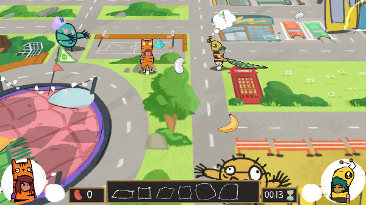
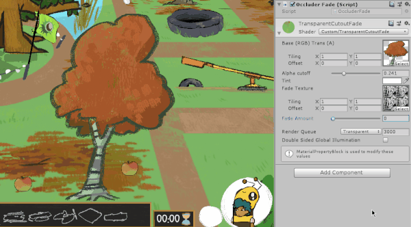

Kissy Kissy is a game by Pretty Digital, which I am contributing to with Unity development, game design and programming.
It is a local co-op action game, where you play as toddlers trying to avoid kisses from your grandparents and building pillow dens to escape to safety. It is currently at a demo stage, with continued development planned for the future.
I implemented a 2.5D perspective, allowing the players to run behind other objects in the game as they search for pillows and toys. To make sure the player can always be seen I wrote a shader that fades the sprite using a custom texture when they walk behind objects that would block them.
